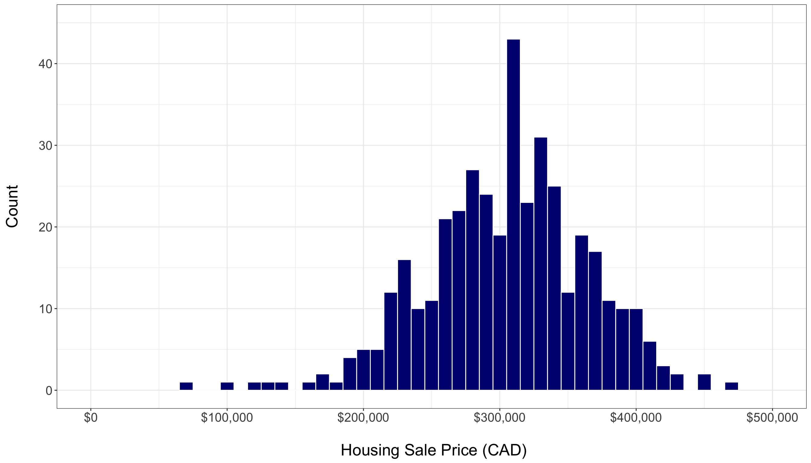
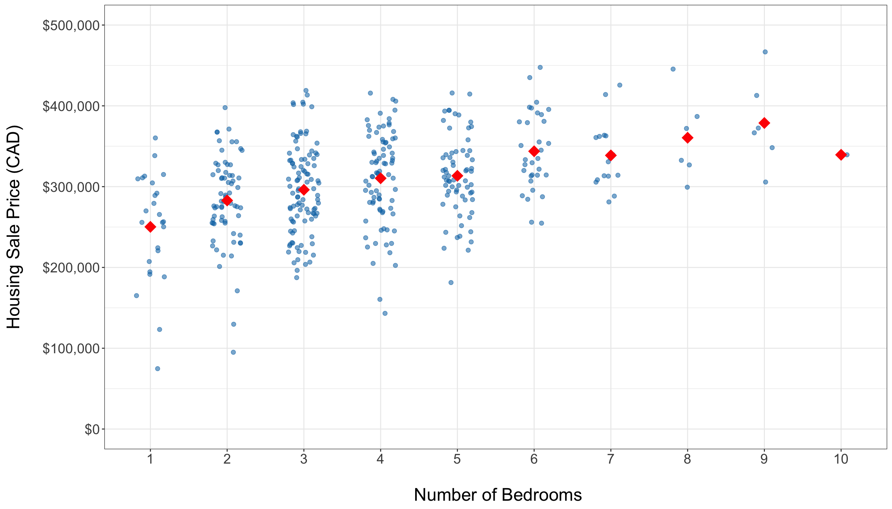
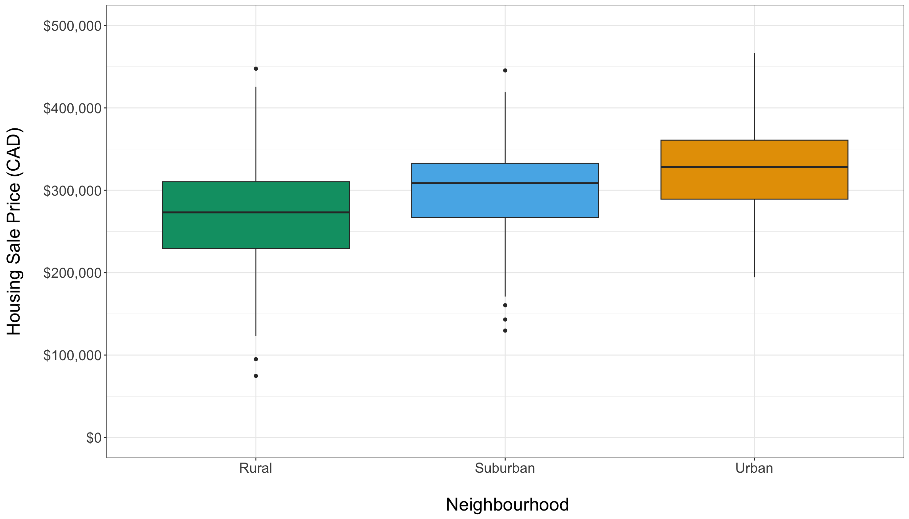
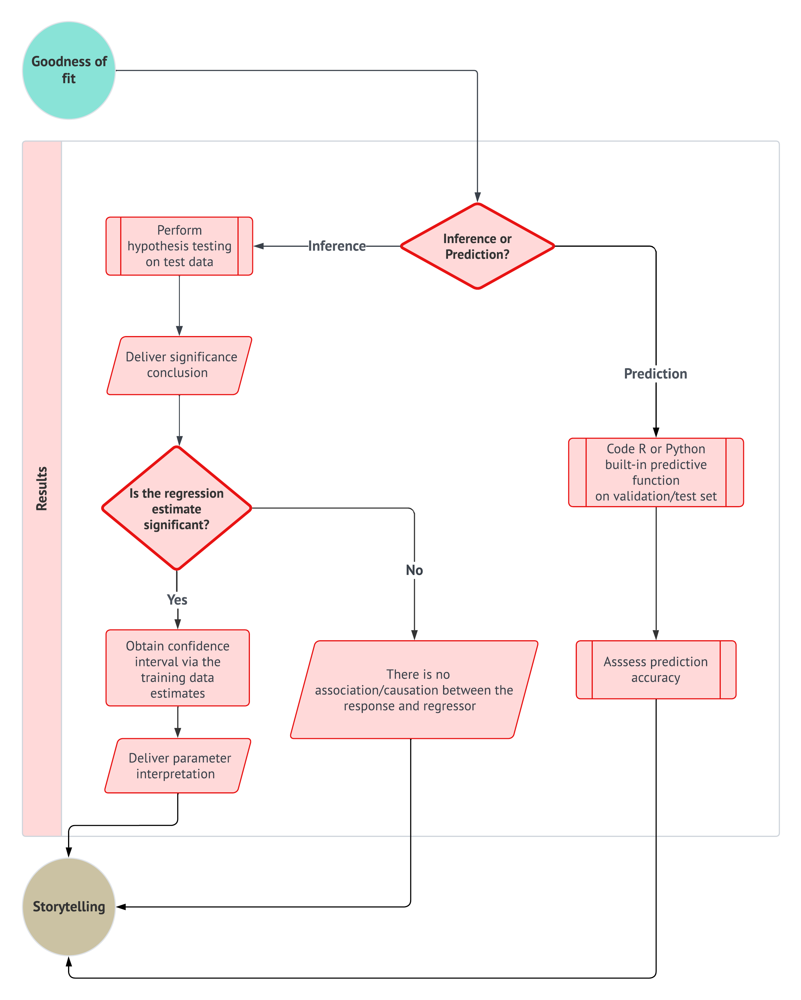

1 Getting Ready for Regression Cooking!
First things first! Let us prepare for all the different regression techniques to be introduced in Chapter 3.
Learning Objectives
By the end of this chapter, you will be able to:
- Define the three core pillars to be applied in regression modelling throughout this book: a data science workflow, the right workflow flavour, and the most appropriate model.
- Outline how the ML-Stats dictionary works to bridge the terminology used in machine learning (ML) and statistics.
- Explain how the data science workflow can be applied in regression analysis.
- Describe how the mind map of regression analysis acts as the primary chapter structure of this book and as a toolboox.
- Contrast the differences and simmilarities between supervised learning and regression analysis.
That said, we want to highlight one guiding principle for all of our work:
Different modelling estimation techniques in regression analysis become easier to understand once we develop a strong probabilistic and inferential grasp of populations or systems of interest.

The above guiding principle rests on foundational statistical ideas on how data is generated and how it can be modelled through various regression methods. We will explore these underlying concepts in Chapter 2. Before doing so, however, this chapter will build on the following three core pillars:
- Implementing a structured data science workflow as outlined in Section 1.2.
- Selecting the appropriate workflow approach based on an inferential or predictive paradigm, as shown in Figure 1.1.
- Choosing the appropriate regression model based on the response variable or outcome of interest, using the mind map in Section 1.3 (analogous to a regression toolbox).
The rationale behind the three pillars
Each data science problem involving regression analysis has unique characteristics, depending on if the inquiry is inferential or predictive. Different types of outcomes (or response variables) require distinct modelling approaches. For example, we might analyze survival times (e.g., the time until one particular equipment of a given brand fails), categorical outcomes (e.g., a preferred musical genre in the Canadian young population), or count-based outcomes (e.g., how many customers we would expect on a regular Monday morning in the branches of a major national bank), etc. Moreover, under this regression context, our analysis extends beyond the outcome itself, but we also examine how it relates to other explanatory variables (the so-called features). For instance, if we are studying musical genre preferences among young Canadians, we could explore how age groups influence these preferences or compare genre popularity across provinces.
At first glance, it might seem that every regression problem should have a unique workflow tailored to its specific model. However, this is not entirely the case. In Figure 1.1, we introduce a structured regression workflow designed as a proof of concept for thirteen different regression models. Each flow is covered in a separate chapter of this book alongside a review of probability and statistics (i.e, thirteen chapters in this book aside from the probability and statistics review). This workflow standardizes our approach, making analysis more transparent and efficient while allowing us to communicate insights effectively through data storytelling. Naturally, this workflow includes decision points that determine whether the approach follows an inferential or predictive path (the second pillar). As for our third pillar, this comes into play at the data modelling stage, where the regression toolbox Figure 1.15 guides model selection based on the response variable type.
Let us establish a convention for using admonitions throughout this textbook. These admonitions will help distinguish between key concepts, important insights, and supplementary material, ensuring clarity as we explore different regression techniques. We will start using these admonitions in Section 1.1.
Definition
A formal statistical and/or machine learning definition. This admonition aims to untangle the significant amount of jargon and concepts that both fields have. When applicable, alternative terminology will be included to highlight equivalent terms across statistics and machine learning.
Heads-up!
An idea (or ideas) related to a modelling approach, a specific workflow stage, or an important data science concept. This admonition is used to flag crucial statistical or machine learning topics that warrant deeper exploration.
Tip
An idea (or ideas) that may extend beyond the immediate discussion but provides additional context or helpful background. When applicable, references to further reading will be provided.
The core idea of the above admonition arrangement is to allow the reader to discern between ideas or concepts that are key to grasp from those whose understanding might not be highly essential (but still interesting to check out in further literature). With this structure in place, we can now introduce another foundational resource: a common ground between machine learning and statistics which will be elaborated on in the next section.
1.1 The ML-Stats Dictionary
Machine learning and statistics often overlap, especially in regression modelling. Topics covered in a regression-focused course, under a purely statistical framework, can also appear in machine learning-based courses on supervised learning, but the terminology can differ. Recognizing this overlap, the Master of Data Science (MDS) program at the University of British Columbia (UBC) provides the MDS Stat-ML dictionary (Gelbart 2017) under the following premises:
This document is intended to help students navigate the large amount of jargon, terminology, and acronyms encountered in the MDS program and beyond.
This section covers terms that have different meanings in different contexts, specifically statistics vs. machine learning (ML).
Both disciplines have a tremendous amount of jargon and terminology. As mentioned in the Preface, machine learning and statistics construct a substantial synergy reflected in data science. Despite this overlap, misunderstandings can still happen due to differences in terminology. To prevent this, we need clear bridges between these disciplines via a ML-Stats dictionary (ML stands for Machine Learning).
Heads-up on how the ML-Stats Dictionary is built and structured!
The complete ML-Stats dictionary can be found in Appendix A. This resource builds upon the concepts introduced in the definition callout box throughout the fifteen main chapters of this textbook. The dictionary aims to clarify terminology that varies between statistics and machine learning, specifically in the context of supervised learning and regression analysis.

Terms in this dictionary related to statistics will be highlighted in blue, while terms related to machine learning will be highlighted in magenta. This color scheme is designed to help readers easily navigate between the two disciplines. With practice, you will become proficient in applying concepts from both fields.
The above appendix will be the section in this book where the reader can find all those statistical and machine learning-related terms in alphabetical order. Notable terms (either statistical or machine learning-related) will include an admonition identifying which terms (again, either statistical or machine learning-related) are equivalent or somewhat equivalent (or even not equivalent if that is the case). For instance, consider the statistical term called dependent variable:
In supervised learning, it is the main variable of interest we are trying to learn or predict, or equivalently, in a statistical inference framework, the variable we are trying explain.
Then, the above definition will be followed by this admonition:
Equivalent to:
Response variable, outcome, output or target.
Note that we have identified four equivalent terms for the term dependent variable. Furthermore, these terms can be statistical or machine learning-related.
Heads-up on the use of terminology!
Throughout this book, we will use specific concepts interchangeably while explaining different regression methods. If confusion arises, you must always check definitions and equivalences (or non-equivalences) in Appendix A.
Next, we will introduce the three main foundations of this textbook: a data science workflow, choosing the correct workflow flavour (inferential or predictive), and building your regression toolbox.
1.2 The Data Science Workflow

Understanding the data science workflow is essential for mastering regression analysis. This workflow serves as a blueprint that guides us through each stage of our analysis, ensuring that we apply a systematic approach to solving our inquiries in a reproducible way. Each of the three pillars of this textbook—data science workflow, the right workflow flavour (inferential or predictive), and a regression toolbox—are deeply interconnected. Regardless of the regression model we explore, this general workflow provides a consistent framework that helps us navigate our data analysis with clarity and purpose.
As shown in Figure 1.1, the data science workflow is composed of the following eight stages (each of which will be discussed in more detail in subsequent subsections):
- Study design: Define the research question, objectives, and variables of interest to ensure the analysis is purpose-driven and aligned with the problem at hand.
- Data collection and wrangling: Gather and clean data, addressing issues such as missing values, outliers, and inconsistencies to transform it into a usable format.
- Exploratory data analysis (EDA): Explore the data through statistical summaries and visualizations to identify patterns, trends, and potential anomalies.
- Data modelling: Apply statistical or machine learning models to uncover relationships between variables or make predictions based on the data.
- Estimation: Calculate model parameters to quantify relationships between variables and assess the accuracy and reliability of the model.
- Goodness of fit: Evaluate the model’s performance using metrics and model diagnostic checks to determine how well it explains the data.
- Results: Interpret the model’s outputs to derive meaningful insights and provide answers to the original research question.
- Storytelling Communicate the findings through a clear, engaging narrative that is accessible to a non-technical audience.
By adhering to this workflow, we ensure that our regression analysis are not only systematic and thorough but also capable of producing results that are meaningful within the context of the problem we aim to solve.
Heads-up on the importance of a formal structure in regression analysis!
From the earliest stages of learning data analysis, understanding the importance of a structured workflow is crucial. If we do not adhere to a predefined workflow, we risk misinterpreting the data, leading to incorrect conclusions that fail to address the core questions of our analysis. Such missteps can result in outcomes that are not only meaningless but potentially misleading when taken out of the problem’s context.
Therefore, it is essential for aspiring data scientists to internalize this workflow from the very beginning of their education. A systematic approach ensures that each stage of the analysis is conducted with precision, ultimately producing reliable and contextually relevant results.

1.2.1 Study Design
The first stage of this workflow is centred around defining the main statistical inquiries we aim to address throughout the data analysis process. As a data scientist, your primary task is to translate these inquiries from the stakeholders into one of two categories: inferential or predictive. This classification determines the direction of your analysis and the methods you will use:
- Inferential: The objective here is to explore and quantify relationships of association or causation between explanatory variables (referred to as regressors in the models discussed in this textbook) and the response variable within the context of the specific problem at hand. For example, you might statistically seek to determine whether a particular marketing campaign (the regressor) significantly influences sales revenue (the response), and if it does, by how much.
- Predictive: In this case, the focus is on making accurate predictions about the response variable based on future observations of the regressors. Unlike inferential inquiries, where understanding the relationship between variables is key, the primary goal here is to maximize prediction accuracy. This approach is fundamental in machine learning. For instance, you might build a model to predict future sales revenue based on past marketing expenditures, without necessarily needing to understand the underlying relationship between the two.
Heads-up on the inquiry focus of this book!
In the regression chapters of this book, we will emphasize both types of inquiries. As we follow the workflow from Figure 1.1, we will explore the two pathways identified by the decision points concerning inference and prediction.
Example: Housing Sale Prices
To illustrate the study design stage, let us consider a simple example involving housing sale prices in a specific city:
- If our goal is inferential, we might be interested in understanding the relationship between various factors—such as square footage, number of bedrooms, and proximity to schools—and housing sale prices. Specifically, we would ask questions like:
How does the number of bedrooms affect the price of a house, once we account for other factors?
- If our goal is predictive, we would focus on estimating a model that can accurately predict the price of a house based on its features (i.e., the characteristics of a given house), regardless of whether we fully understand how each feature contributes to the price. Hence, we would be able to answer questions such as:
What would be the predicted price of a house with 3,500 square feet and 3 bedrooms located on a block where the closest school is at 2.5 km?

In both cases, the study design stage involves clearly defining these objectives and determining the appropriate data modelling methods to address them. This stage sets the foundation for all subsequent steps in the data science workflow. After establishing the study design, the next step is data collection and wrangling, as shown in Figure 1.2.

1.2.2 Data Collection and Wrangling

Once we have clearly defined our statistical questions, the next crucial step is to collect the data that will form the basis of our analysis. The way we collect this data is vital because it directly affects the accuracy and reliability of our results:
- For inferential inquiries, we focus on understanding populations or systems that we cannot fully observe. These populations are governed by characteristics (referred to as parameters) that we want to estimate. Because we cannot study every individual in the population or system, we collect a smaller, representative subset called a sample. The method we use to collect this sample—known as sampling—is crucial. A proper sampling method ensures that our sample reflects the larger population or system, allowing us to make accurate and precise generalizations (i.e., inferences) about the entire population or system. After collecting the sample, it is common practice to randomly split the data into training and test sets. This split allows us to build and assess our models, ensuring that the findings are robust and not overly tailored to the specific data at hand.
- For predictive inquiries, our goal is often to use existing data to make predictions about future events or outcomes. In these cases, we usually work with large datasets (databases) that have already been collected. Instead of focusing on whether the data represents a population (as in inferential inquiries), we focus on cleaning and preparing the data so that it can be used to train models that make accurate predictions. After wrangling the data, it is typically split into training, validation (if necessary, depending on our chosen modelling strategy), and test sets. The training set is used to build the model, the validation set is used to tune model parameters, and the test set evaluates the model’s final performance on unseen data.
Tip on sampling techniques!
Careful attention to sampling design is a crucial step in any research aimed at supporting valid regression-based inference. The selection of an appropriate sampling design should be guided by the structural characteristics of the population as well as the specific goals of the analysis. A well-designed sampling strategy enhances the accuracy, precision, and generalizability of parameter estimates derived from regression models, particularly when the intention is to extend model-based conclusions beyond the observed data to the whole population or system.
Below, we summarize some commonly used probability-based sampling designs, each of which has distinct implications for model validity and estimation efficiency:
- Simple random sampling: Every unit in the population has an equal probability of selection. While this method is straightforward to implement and analyze, it may be inefficient or impractical for populations with heterogeneous subgroups.
- Systematic sampling: Sampling occurs at fixed intervals from an ordered list, starting from a randomly chosen point. This design can improve efficiency under certain ordering schemes, but caution is necessary to avoid biases related to periodicity.
- Stratified sampling: The population is divided into mutually exclusive strata based on key characteristics (e.g., age, income, region, etc.). Samples are drawn within each stratum, often in proportion to the strata sizes or based on optimal allocation. This approach increases precision for subgroup estimates and enhances overall model efficiency.
- Cluster sampling: The population is divided into naturally occurring clusters (e.g., households, schools, geographic units, etc.), and entire clusters are sampled randomly. This design is often preferred for cost efficiency, but it typically requires adjustments for intracluster correlation during analysis.
In the context of our regression-based inferential framework, it is necessary to carefully plan data collection and preparation around the sampling strategy. The choice of sampling design can influence not only model estimation but also the interpretation and generalizability of the results. While this textbook does not provide an exhaustive treatment of sampling theory, we recommend Lohr (2021) for an in-depth reference. Their work offers both theoretical insights and applied examples that are highly relevant for data scientists engaged in model-based inference.
Example: Collecting Data for Housing Inference and Predictions
Let us continue with our housing example to illustrate the above concepts:
- Inferential Approach: Suppose we want to understand how the number of bedrooms is associated with the housing sale prices in a city. To do this, we would collect a sample of house sales that accurately represents the city’s entire housing market. For instance, we might use stratified sampling to ensure that we include houses from different neighbourhoods in proportion to how common they are. After collecting the data, we would split it into training and test sets. The training set helps us build our model and estimate the relationship between variables, while the test set allows us to evaluate how well our findings generalize to new data.
- Predictive Approach: If our goal is to predict the selling price of a house based on its features (such as size, number of bedrooms, and location), we would gather a large dataset of recent house sales. This data might come from a real estate database that tracks the details of each sale. Before we can use this data to train a model, we would clean it by filling in any missing information, converting data to a consistent format, and making sure all variables are ready for analysis. After preprocessing, we would split the data into training, validation, and test sets. The training set would be used to fit the model, the validation set to fine-tune it, and the test set to assess how well the model can predict prices for houses it has not seen before.

As shown in Figure 1.3, the data collection and wrangling stage is fundamental to the workflow. It directly follows the study design and sets the stage for exploratory data analysis.

1.2.3 Exploratory Data Analysis
Before diving into data modelling, it is crucial to develop a deep understanding of the relationships between the variables in our training data. This is where the third stage of the data science workflow comes into play: exploratory data analysis (EDA). EDA serves as a vital process that allows us to visualize and summarize our data, uncover patterns, detect anomalies, and test key assumptions that will inform our modelling decisions.

The first step in EDA is to classify our variables according to their types. This classification is essential because it guides our choice of analysis techniques and models. Specifically, we need to determine whether each variable is discrete or continuous, and whether it has any specific characteristics such as being bounded or unbounded.
-
Response (i.e., the \(Y\)):
- Determine if the response variable is discrete (e.g., binary, count-based, categorical) or continuous.
- If it is continuous, let us consider whether it is bounded (e.g., percentages that range between \(0\) and \(100\)) or unbounded (e.g., a variable like company profits/losses that can take on a wide range of values).
-
Regressors (i.e., the \(x\)s):
- For each regressor, we must identify whether it is discrete or continuous.
- If a regressor is discrete, let us classify it further as binary, count-based, or categorical.
- If a regressor is continuous, let us determine whether it is bounded or unbounded.
This classification scheme helps us select the appropriate visualization and statistical methods for our analysis, as different variable types often need different approaches. It ensures that we are well-equipped to make the right choices in our analyses.
After classifying your variables, the next step is to create visualizations and calculate descriptive statistics using our training data. This involves coding plots that can reveal the underlying distribution of each variable and the relationships between them. For instance, we might create histograms to visualize distributions, scatter plots to explore relationships between continuous variables, and box plots to compare discrete and categorical variables against a continuous variable.
Alongside these visualizations, it is important to calculate key descriptive statistics such as the mean, median, and standard deviation if our variables are numeric. These statistics provide a summary of our data, offering insights into central tendency and variability. We might also use a correlation matrix to assess the strength of relationships between continuous variables.
Once we have generated these plots and statistics, they should be displayed in a clear and logical manner. The goal here is to interpret the data and draw preliminary conclusions about the relationships between the observed variables. Presenting these findings effectively helps to uncover key descriptive insights and prepares you for the subsequent modelling stage. Finally, the insights gained from our EDA must be clearly articulated. This involves summarizing the key findings and considering their implications for the next stage of the workflow—data modelling. Observing patterns, correlations, and potential outliers in this stage will inform your modelling approach and ensure that it is grounded in a thorough and informed analysis.
Heads-up on the use of EDA to deliver inferential conclusions!
EDA plays a critical role in uncovering patterns, detecting anomalies, and generating hypotheses. However, it is important to emphasize that the results of EDA should not be generalized beyond the specific sample data being analyzed. EDA is inherently descriptive and focused on the sample, and it is not intended to support inferential claims about larger populations. The insights gained from EDA are contingent on the specific sample and may not accurately reflect systematic relationships within the broader population. Nevertheless, EDA can provide valuable information to inform our modelling decisions.

Generalizing findings to a larger population requires formal statistical inference, which takes into account sampling variability, model uncertainty, and the precision of estimates. This is particularly important in regression analysis, where extending patterns observed in a sample to the wider population needs rigorous modelling assumptions, estimation procedures, and a quantification of uncertainty (e.g., through confidence intervals). Treating EDA findings as if they were inferential conclusions can lead to misleading interpretations throughout our data science workflow.
Example: EDA for Housing Data
To illustrate the EDA process, we will follow it within the context of the housing example used in the previous two workflow stages, utilizing simulated data. Suppose we have a sample of \(n = 2,000\) houses drawn from various Canadian cities through cluster sampling. As shown in Table 1.1, our earlier inferential and predictive inquiries focus on housing sale price in CAD as our response variable in a regression context. Note that this numeric response cannot be negative, which classifies it as positively unbounded. Additionally, Table 1.1 provides the relevant details for the regressors in this case: the number of bedrooms, square footage, neighbourhood type, and proximity to schools. Note that we also indicate the coding names of all the variables involved.
| Variable | Type | Scale | Model Role | Coding Name |
|---|---|---|---|---|
| Housing Sale Price (CAD) | Continuous | Positively unbounded | Response | sale_price |
| Number of Bedrooms | Discrete | Count | Regressor | bedrooms |
| Square Footage | Continuous | Positively unbounded | Regressor | sqft |
| Neighbourhood Type (Rural, Suburban or Urban) | Discrete | Categorical | Regressor | neighbourhood |
| Proximity to Schools (km) | Continuous | Positively unbounded | Regressor | school_distance |
Before continuing with this housing example, let us make a quick note on this textbook’s coding delivery.
Heads-up on coding tabs!
You might be wondering:
Where do we begin with some
RorPythoncode?
It is time to introduce our very first lines of code and provide some explanations about the coding approach in this book. Our goal is to make this book “bilingual,” meaning that all hands-on coding practices can be performed in either R or Python. Whenever we present a specific proof of concept or data modelling exercise, you will find two tabs: one for R and another for Python. We will first show the input code, followed by the output.
With this format, you can choose your coding journey based on your language preferences and interests as you progress throughout the book.
Having clarified the bilingual nature of this book with respect to coding, let us load this sample of \(n = 2,000\) houses in both R and Python. For Python, we will need the {pandas} library. Table 1.2 and Table 1.3 show the first 100 rows of this full dataset and R and Python, respectively.
# Importing library
import pandas as pd
# Loading dataset
housing_data = pd.read_csv("data/housing_data.csv")
# Showing the first 100 houses of the full dataset
print(housing_data.head(100))Tip on this simulated housing data!
The housing_data mentioned above is not an actual dataset; it is a simulated one designed to effectively illustrate our data science workflow in this chapter. This simulated dataset will somehow enable us to meet the assumptions of the chosen model during the data modelling stage outlined in Section 1.2.4. If you would like to learn more about this generative modelling process, you can refer to the provided R script.

Now, we will randomly split the sampled data into training and testing sets for both inferential and predictive inquiries. Specifically, 20% of the data will be allocated to the training set, while the remaining 80% will serve as the testing set. For the predictive analysis, we will not create a validation set because our chosen modelling strategy (to be discussed in Section 1.2.4) does not require it. The below codes do the following:
-
R: This code executes an 80/20 random split of thehousing_datadataset using the {rsample} package (Frick et al. 2025). Theset.seed()function ensures reproducibility, whileinitial_split()partitions the data into training and testing subsets. The resulting split object is then passed totraining()andtesting()to extract the corresponding datasets. A sanity check follows, wheredim()andnrow()are used to inspect the shapes of each subset and to compute their observed proportions, confirming that the split aligns with the intended allocation. -
Python: This code performs an analogous 80/20 partition ofhousing_datausingtrain_test_split()from {scikit-learn} (Pedregosa et al. 2011), withrandom_stateensuring reproducibility. The function returns the training and testing subsets directly. A subsequent sanity check uses.shapeandlen()to inspect the size of each subset and to verify the observed proportions of the split, ensuring that the partitioning matches the expected configuration before proceeding with further modelling steps. Note that we also use the {numpy} library (Harris et al. 2020).
Heads-up on the different training and testing sets obtained via R and Python!
It turns out that both the {rsample} package in R and {scikit-learn} in Python utilize different pseudo-random number generators. As a result, they produce different training and testing data splits, even when using the same seed values.
# Loading library
library(rsample)
# Seed for reproducibility
set.seed(123)
# Randomly splitting into training and testing sets
housing_data_splitting <- initial_split(housing_data,
prop = 0.2
)
# Assigning data points to training and testing sets
training_data <- training(housing_data_splitting)
testing_data <- testing(housing_data_splitting)
# Dimension check
cat("Training shape:", dim(training_data), "\n")
cat("Testing shape:", dim(testing_data), "\n\n")
# Proportion check
n_total <- nrow(housing_data)
n_train <- nrow(training_data)
n_test <- nrow(testing_data)
cat("Training proportion:", round(n_train / n_total, 3), "\n")
cat("Testing proportion:", round(n_test / n_total, 3), "\n")# Importing libraries
from sklearn.model_selection import train_test_split
import numpy as np
# Seed for reproducibility
random_state = 123
# Randomly splitting into training and testing sets
training_data, testing_data = train_test_split(
housing_data,
test_size=0.8,
random_state=random_state
)
# Dimension check
print("Training shape:", training_data.shape)
print("Testing shape:", testing_data.shape, "\n")
# Proportion check
n_total = len(housing_data)
n_train = len(training_data)
n_test = len(testing_data)
print("Training proportion:", round(n_train/n_total, 3))
print("Testing proportion:", round(n_test/n_total, 3))Training shape: 400 5 Testing shape: 1600 5 Training proportion: 0.2 Testing proportion: 0.8 Training shape: (400, 5)Testing shape: (1600, 5) Training proportion: 0.2Testing proportion: 0.8In addition, the code below displays the first 100 rows of our training data, which is a subset of size equal to 400 data points.
# Showing the first 100 houses of the training set
head(training_data, n = 100)# Showing the first 100 houses of the training set
print(training_data.head(100))Due to the use of different pseudo-random number generators for data splitting in R and Python, the training_data in the tables above differs. Now, let us make a necessary clarification about why we need to split the data in inferential inquiries.
Heads-up on data splitting for inferential inquiries!
In machine learning, data splitting is a foundational practice designed to prevent data leakage in predictive inquiries. However, you may wonder:
Why should we also split the data for inferential inquiries?
In the context of statistical inference, especially when making claims about population parameters, data splitting plays a different but important role: it helps prevent double dipping. Double dipping refers to the misuse of the same data for both exploring hypotheses (as in EDA) and formally testing those hypotheses. This practice undermines the validity of inferential claims by increasing the probability of Type I errors—incorrectly rejecting the null hypothesis \(H_0\) when it is actually true for the population under study.

To illustrate this, consider conducting a one-sample \(t\)-test in a double-dipping scenario for a population mean \(\mu\). Suppose we first observe a sample mean of \(\bar{x} = 9.5\) (i.e., an EDA summary statistic), and then decide to test the null hypothesis
\[\text{$H_0$: } \mu \geq 10\]
against the alternative hypothesis
\[\text{$H_1$: } \mu < 10,\]
after performing EDA on the same data. If we proceed with the formal \(t\)-test using that same data, we are essentially tailoring the hypothesis to fit our sample. Empirical simulations can show that such practices lead to inflated false positive rates, which threaten the reproducibility and integrity of statistical inference.
Unlike predictive modelling, data splitting is not a routine practice in statistical inference. However, it becomes relevant when the line between exploration and formal testing is blurred. For more information on double dipping in statistical inference, Chapter 6 of Reinhart (2015) offers in-depth insights and some real-life examples.
After classifying the variables and splitting our data, we will move on to coding the plots and calculating the summary statistics.
Heads-up on the use of R-generated training and testing for the rest of the data science workflow!
We have clarified that both R and Python produce different random data splits, even when using the same seeds. Therefore, in all the following Python code snippets related to this housing price case, we will be utilizing both the training and testing sets generated by the R-based data splitting. This approach ensures consistency in our coding outputs.
If you want to reproduce all these outputs in Python using Quarto (Allaire et al. 2025), while utilizing the R-generated sets, you can import these datasets from the R environment using the {reticulate} package (Ushey, Allaire, and Tang 2025).
As we move forward, we provide a list of plots and summary statistics, along with their corresponding EDA outputs and interpretations. This is based on our training data, which has a size of 400. Note that we are not providing the code to generate all of the EDA output directly (though you can find the R source here). However, subsequent chapters will include both R and Python code snippets to generate the corresponding EDA insights. Below is the list:
- A histogram of housing sale prices, as in Figure 1.4, shows the response’s distribution and helps identify any outliers. The training set reveals a fairly symmetric distribution of sale prices, with a noticeable concentration of sales between \(\$200,000\) and \(\$400,000\). However, there are a few outliers. Even with just 20% of the total data, this plot provides valuable graphical insights into central tendency and variability.

- Side-by-side jitter plots, as in Figure 1.5, visualize the distribution of sale prices across different bedroom counts, highlighting spread. Overall, these plots indicate a positive association between the number of bedrooms and housing sale price. Note that the average price (represented by red diamonds) tends to increase with the addition of more bedrooms. The training set predominantly has homes with 3 to 5 bedrooms, and there are some high-priced outliers present even among mid-sized homes.

- A scatter plot displaying the relationship between square footage and housing sale price, as in Figure 1.6, illustrates how these two continuous variables interact. There is a clear upward trend in the training data, indicated by the fitted solid red line of the simple linear regression (which is a preliminary regression fit used by different plotting tools in
RorPython, via the model from Chapter 3). Although the variability increases with larger square footage, the overall positive linear pattern is still clear.

- Side-by-side box plots, as in Figure 1.7, are used to compare housing sale prices across different types of neighbourhoods, highlighting variations in median prices. The training data reveals neighbourhood-specific price patterns: urban homes tend to have higher prices, while rural homes are generally less expensive. However, from a graphical perspective, we do not observe major differences in price spreads between these types of neighbourhoods.

- The scatter plot showing the relationship between proximity to schools and housing sale price, as in Figure 1.8, reveals an almost flat trend in the training data. This observation is supported by the fitted solid red line of the simple linear regression (same model from Chapter 3), indicating a weak graphical relationship between these two variables.
- Descriptive statistics from Table 1.6, such as the mean and standard deviation, summarize continuous variables. In addition, a Pearson correlation matrix from Table 1.7 numerically assesses the relationships between these variables. Note that square footage is positively correlated with housing sale price, while proximity to schools has a negative association.
In displaying and interpreting results, the plots and statistics will guide us in understanding the data. In this specific example, these exploratory insights help identify key factors, such as square footage and neighbourhood type, that influence housing sale prices. They also highlight any outliers that may need further attention during modelling. By following this EDA process, we will establish a solid descriptive foundation for effective data modelling, ensuring that the key variables and their relationships are well understood.
Finally, this structured approach to EDA is visually summarized in Figure 1.9, which shows the sequential steps from variable classification to the delivery of exploratory insights.

1.2.4 Data Modelling
The previous EDA provides a solid descriptive foundation regarding the identified types of data for our response variable and regressors, as well as their graphical relationships. This information will guide us in selecting a suitable regression model based on the following factors:
- The response type (e.g., whether it is continuous, bounded or unbounded, count, binary, categorical, etc.).
- The flexibility of the chosen model (e.g., its ability to handle extreme values or outliers).
- Its interpretability (i.e., can we effectively communicate our statistical findings to stakeholders?).

In statistical literature, we often encounter classical linear regression models, such as the Ordinary Least-squares (OLS) model discussed in Chapter 3. This model enables us to explain our continuous response variable of interest, denoted as a random variable \(Y\), in the form of a linear combination of a specified set of regressors (the observed \(x\) variables). A linear combination is essentially an additive relationship where \(Y\) depends on the \(x\) variables, which are multiplied by regression coefficients. Alternatively, for both continuous and discrete response variables, we can utilize more complex models that establish a non-linear relationship between \(Y\) and the \(x\) variables. Some of these models are referred to as generalized linear models (GLMs).
For this workflow stage, whether using a classical linear regression model like OLS or a more complex one such as a GLM (a type of model that is covered in this book along other models that explain survival time responses), we need to establish modelling equations that align with both theoretical and data-driven considerations. These modelling equations will need definitions for the parameters, link functions (if applicable as in the case of GLMs), and any relevant distributional assumptions based on the chosen model. Then, once we have defined our modelling equation(s), we can proceed to the estimation stage. Note that this data modelling stage is iterative, as illustrated in Figure 1.10. The process will depend heavily on the results obtained during the goodness-of-fit stage.

Example: OLS Regression Model for Housing Data
Let us continue with our housing example, where our response of interest is the sale price of a house in CAD, as shown in Table 1.1. During the study design stage outlined in Section 1.2.1, we identified two key inquiries: inferential and predictive. The inferential inquiry focuses on understanding the statistical associations between the sale price and other variables, such as square footage, number of bedrooms, and proximity to schools. In contrast, the predictive inquiry involves fitting a suitable model to obtain estimates that will enable us to predict housing sale prices based on these same features.
Before selecting a model, we need to define our mathematical notation for all the variables involved. Let \(Y_i\) represent the continuous sale price of the \(i\)th house in CAD from a dataset of size \(n\) used to estimate a chosen model in general, where \(i = 1, 2, \ldots, n\). For the observed explanatory variables, we define the following:
- \(x_{i, 1}\) is the number of bedrooms in the \(i\)th house, which is a count-type variable.
- \(x_{i, 2}\) is the continuous square footage of the \(i\)th house.
- \(x_{i, 3}\) is the continuous proximity to schools for the \(i\)th house in km.
To mathematically represent the categorical and nominal neighbourhood types to which the \(i\)th house could belong, we need more than one variable \(x\). In regression analysis involving nominal explanatory variables, we typically use binary dummy variables. In this example, these dummy variables will help us identify the neighbourhood type of each house. Generally, for a nominal variable with \(u\) categories, we need to define \(u - 1\) dummy variables, as shown in Table 1.8.
| Level | \(x_{i, 1}\) | \(x_{i, 2}\) | \(\cdots\) | \(x_{i, u - 1}\) |
|---|---|---|---|---|
| \(1\) | \(0\) | \(0\) | \(\cdots\) | \(0\) |
| \(2\) | \(1\) | \(0\) | \(\cdots\) | \(0\) |
| \(\vdots\) | \(\vdots\) | \(\vdots\) | \(\ddots\) | \(\vdots\) |
| \(u\) | \(0\) | \(0\) | \(\cdots\) | \(1\) |
Heads-up on how to use dummy variables!
In Table 1.8, note that level \(1\) is considered the baseline (reference) level. If the \(i\)th observation belongs to level \(1\), then all the dummy variables \(x_{i, 1}, \ldots, x_{i, u - 1}\) will take the value of \(0\). The choice of baseline affects how we interpret the estimated regression coefficients later in our data science workflow.
Table 1.9 shows the dummy variable arrangement for our housing example regarding the neighbourhood type where rural is the baseline level. Since we have three levels (rural, suburban, and urban), our chosen model will have two binary dummy variables for the \(i\)th house:
\[ x_{i, 4} = \begin{cases} 1 \quad \text{if the house belongs to a suburban neighbourhood},\\ 0 \quad \text{otherwise}; \end{cases} \tag{1.1}\]
and
\[ x_{i, 5} = \begin{cases} 1 \quad \text{if the house belongs to an urban neighbourhood},\\ 0 \quad \text{otherwise}. \end{cases} \tag{1.2}\]
| Level | \(x_{i,4}\) | \(x_{i,5}\) |
|---|---|---|
| \(\text{Rural}\) | \(0\) | \(0\) |
| \(\text{Suburban}\) | \(1\) | \(0\) |
| \(\text{Urban}\) | \(0\) | \(1\) |
With the mathematical notation for our data variables defined, it is time to choose a suitable regression model to address our inferential and predictive inquiries. Since the nature of \(Y_i\) is continuous, we may consider using OLS regression, as outlined in Chapter 3, although there is an important distributional matter to be highlighted at the end of this section. OLS is typically the first regression model to explore because it is a widely used model that is easy to understand and communicate to stakeholders. We refer to OLS as a parametric model, a distinction that other models, such as the GLMs, also have. Let us define this type of model below.
Definition of parametric model
A parametric model is a type of model that assumes a specific functional relationship between the response variable of interest, \(Y\), which is considered a random variable, and one or more observed explanatory variables, \(x\). This relationship is characterized by a finite set of parameters and can often be expressed as a linear combination of the observed \(x\) variables, which favours interpretability.
Moreover, since \(Y\) is a random variable, there is room to make further assumptions on it in the form of a probability distribution, independence or even homoscedasticity (the condition where all responses in the population have the same variance). It is essential to test these assumptions after fitting this type of models, as any deviations may result in misleading or biased estimates, predictions, and inferential conclusions.
A parametric model, as previously mentioned, allows us to prioritize interpretability in our regression analysis, and OLS offers this advantageous characteristic. The classical setup of OLS describes the relationship between the response variable \(Y\) and the observed variables \(x\) as a linear combination, represented by the following equation for \(i = 1, 2, \ldots, n\) in this housing price example:
\[ Y_i = \underbrace{\beta_0 + \beta_1 x_{i, 1} + \beta_2 x_{i, 2} + \beta_3 x_{i, 3} + \beta_4 x_{i, 4} + \beta_5 x_{i, 5}}_{\text{Systematic Component}} + \underbrace{\varepsilon_i.}_{\substack{\text{Random} \\ \text{Component}}} \tag{1.3}\]
Equation 1.3 indicates two important components in this regression model on its righ-hand side:
- Systematic Component: This component includes six fixed and unknown regression parameters (\(\beta_0\), \(\beta_1\), \(\beta_2\), \(\beta_3\), \(\beta_4\), and \(\beta_5\)) that we will estimate in the next stage using our training data. Note that this component represents the expected value of the response variable \(Y\), conditioned on the observed values of the regressors and it is also the result of the assumptions on the random component below:
\[ \begin{align*} \mathbb{E}(Y_i \mid x_{i, 1}, \ldots, x_{i, 5}) &= \beta_0 + \beta_1 x_{i, 1} + \beta_2 x_{i, 2} + \\ & \qquad \beta_3 x_{i, 3} + \beta_4 x_{i, 4} + \beta_5 x_{i, 5}. \end{align*} \tag{1.4}\]
- Random Component: For the \(i\)th observation, this is denoted by the random variable \(\varepsilon_i\). This component measures how much the observed value of the response may deviate from its conditioned mean, and it is considered random noise. Since \(\varepsilon_i\) is assumed to be a random variable and is added to a fixed systematic component on the right-hand side of Equation 1.3, this aligns with the notion that \(Y_i\) is treated as a random variable on the left-hand side.
We also need to state the modelling assumptions for this OLS case:
- Each observed regressor on the right-hand side of the Equation 1.3 has an associated regression coefficient \(\beta_j\) for \(j = 1, 2, \ldots, 5\) (these were already indicated as part of the regression parameters). These coefficients represent the expected change in the response variable when a specific regressor \(x_{i,j}\) changes by one unit. Additionally, the regression parameter \(\beta_0\) serves as the intercept of this linear model, representing the mean of the response when all five regressors are equal to zero. This entire arrangement allows for a more interpretable model and aids in addressing our inferential inquiry.
- To pave the way for the corresponding inferential test in OLS, the error term \(\varepsilon_i\) is typically assumed to be normally distributed with a mean of zero (this mean is consistent with the conditioned expected value outlined in Equation 1.4). Additionally, it is assumed that the variance is constant across observations, referred to as the so-called homoscedasticity, and denoted as \(\sigma^2\) (another regression parameter fixed and unknown to estimate via the training set). Furthermore, all error terms \(\varepsilon_i\) are assumed to be statistically independent. These assumptions can be mathematically represented as follows:
\[ \begin{gather*} \mathbb{E}(\varepsilon_i) = 0 \\ \text{Var}(\varepsilon_i) = \sigma^2 \\ \varepsilon_i \sim \text{Normal}(0, \sigma^2) \\ \varepsilon_i \perp \!\!\! \perp \varepsilon_k \; \; \; \; \text{for} \; i \neq k \; \; \; \; \text{(independence)}. \end{gather*} \]
Heads-up on the use of an alternative systematic component!
The systematic component in Equation 1.3 is considered linear with respect to the regression parameters \(\beta_1\), \(\beta_2\), \(\beta_3\), \(\beta_4\), and \(\beta_5\). Therefore, we can model the regressors using mathematical transformations, such as the following polynomial:
\[ Y_i = \beta_0 + \beta_1 x_{i, 1} + \beta_2 x_{i, 2}^2 + \beta_3 x_{i, 3}^3 + \beta_4 x_{i, 4} + \beta_5 x_{i, 5} + \varepsilon_i. \]
This linearity condition on the parameters makes our OLS model flexible enough to improve accuracy in predictive inquiries. However, we would sacrifice some interpretability for inferential inquiries.

Before we conclude this stage, note that Chapter 2 will explore the fundamentals of probability and statistical inference in greater depth. This exploration will enhance our understanding of the modelling assumptions underlying the regression models discussed throughout this book. Additionally, we will broaden our perspective on regression to consider more appropriate models for nonnegative responses, instead of relying on OLS with the assumption of an unbounded, normally distributed response which might be unrealistic for nonnegative housing prices (and still a mild violation on our response assumptions, given that the housing prices appear to have a bell-shaped distribution as shown in Figure 1.4).
1.2.5 Estimation
Based on the data we have and our EDA, defining a suitable regression model (along with the equations that relate the response variable \(Y\) to the regressors \(x\) and the corresponding regression parameters) is an essential step in our data science workflow. This leads us to the next stage: estimation. In this stage, we aim to obtain what we refer to as modelling estimates using our training dataset. The method we choose for estimation largely depends on the specific regression model we adopt to address our inquiries.

In all core chapters of this book, except for Chapter 3, the default method we will use is maximum likelihood estimation (MLE) (the fundamental insights are provided in Section 2.2). Regardless of the chosen estimation method, these estimates (denoted with a hat notation) will allow us to quantify the association (or causation, if applicable) between the outcome variable \(Y\) and the \(x\) regressors. This is particularly relevant in inferential inquiries, provided that the results are statistically significant, as discussed in Section 1.2.7.
As illustrated in Figure 1.11, the data modelling stage will yield the necessary components for this phase in the form of a suitable model, modelling equation, and regression parameters. We will then use the corresponding R or Python fitting function, where the inputs will include the coded modelling equation (which contains the variables of interest: the outcome and the regressors) along with the training set. These fitting functions serve the following purposes:
- In most regression models, obtaining analytical (i.e., exact) solutions for our parameter estimates is not feasible. Specifically, MLE can employ an optimization method such as Newton-Raphson or iteratively reweighted least squares (IRLS), as we aim to maximize the log-likelihood function that involves our observed data and unknown parameters. This function is numerically optimized to estimate these parameters. More information regarding numerical optimization in MLE, including a brief discussion of the Newton-Raphson method, can be found in Section 2.2.3. Throughout the core chapters of the book, we will delve deeper into the fundamentals of IRLS.
- Once the estimation process has been completed using the appropriate log-likelihood function and numerical optimization method (i.e., when the method has converged to an optimal solution), we will obtain outputs that include parameter estimates. These parameter estimates will be used in the subsequent workflow stage, called goodness of fit, to statistically assess whether our fitted model satisfies the assumptions we made about our data in the previous modelling stage.

Example: Fitting the OLS Regression Model for Housing Data

Let us examine the training_data for this housing case, which consists of 400 observations. As shown in Table 1.1, for the \(i\)th house, we have different regressors: the number of bedrooms (bedrooms, denoted as \(x_{i, 1}\)), the continuous square footage (sqft, denoted as \(x_{i, 2}\)), the continuous proximity to schools in km (school_distance, denoted as \(x_{i, 3}\)), and neighborhood type (represented by dummy variables \(x_{i, 4}\) as in Equation 1.1 and \(x_{i, 5}\) as in Equation 1.2, where rural is the baseline). The response variable we are interested in is the continuous housing sale price in CAD (sale price, denoted as \(Y_i\)). Additionally, we will revisit our modelling approach as outlined in Equation 1.3:
\[ Y_i = \beta_0 + \beta_1 x_{i, 1} + \beta_2 x_{i, 2} + \beta_3 x_{i, 3} + \beta_4 x_{i, 4} + \beta_5 x_{i, 5} + \varepsilon_i, \]
where \(\beta_0\), \(\beta_1\), \(\beta_2\), \(\beta_3\), \(\beta_4\), and \(\beta_5\) represent the unknown regression parameters to be estimated to address our inferential and predictive inquiries. Additionally, we have another parameter to estimate, that is the common variance between the random components of each observation (\(i = 1, 2, \ldots, n\)):
\[ \text{Var}(\varepsilon_i) = \sigma^2. \]
Having set up the coding starting point for this estimation, we need to use the corresponding fitting functions to find \(\hat{\beta}_0\), \(\hat{\beta}_1\), \(\hat{\beta}_2\), \(\hat{\beta}_3\), \(\hat{\beta}_4\), \(\hat{\beta}_5\), \(\hat{\sigma}^2\) via OLS regression (as we already decided in the data modelling stage). Therefore, let us the following function and libraries:
-
R: We fit and summarize an OLS model using the {tidyverse} and {broom} (Robinson, Hayes, and Couch 2025) packages. It first loads the two libraries, which provide tools for data manipulation and for converting model outputs into tidy data frames, respectively. Thelm()function then fits the OLS regression model for the responsesale_pricefrom four explanatory variables:bedrooms,sqft,school_distance, andneighbourhoodvia thetraining_data. The resulting model object, stored intraining_OLS_model, contains the estimated parameters (columnestimate) and related statistics (which will be explained in the results stage via the testing set). Thetidy()function from {broom} transforms this model output into a neat, tabular format. Finally,mutate_if()rounds all numeric columns in this tidy summary to two decimal places, producing a clean, readable table of regression results. -
Python: This code fits and summarizes the same OLS model using the {statsmodels} (Seabold and Perktold 2010), {pandas}, and {numpy} libraries. It begins by specifying and fitting this OLS model throughsmf.ols(), which regressessale_pricebased on four explanatory variables:bedrooms,sqft,school_distance, andneighbourhoodvia thetraining_data. The.fit()method estimates the regression coefficients and computes related statistics. Next, a tidy summary table is created usingpd.DataFrame(), which organizes the model output into a clear format. Each numeric value is rounded to two decimal places withnp.round()for readability. Finally, the code prints this table, providing a concise, easy-to-read summary of the regression model.
# Loading libraries
library(tidyverse)
library(broom)
# To import R-generated datasets to Python environment
library(reticulate)
# Fitting the OLS model
training_OLS_model <- lm(
formula = sale_price ~ bedrooms + sqft +
school_distance + neighbourhood,
data = training_data
)
# Displaying the tidy table
tidy(training_OLS_model) |>
mutate_if(is.numeric, round, 2)# A tibble: 6 × 5
term estimate std.error statistic p.value
<chr> <dbl> <dbl> <dbl> <dbl>
1 (Intercept) 53948. 8029. 6.72 0
2 bedrooms 14107. 860. 16.4 0
3 sqft 99.0 3.4 29.1 0
4 school_distance -6964. 1032. -6.75 0
5 neighbourhoodSuburban 26908. 3999. 6.73 0
6 neighbourhoodUrban 60509. 3970. 15.2 0# Importing libraries
import statsmodels.formula.api as smf
# Importing R-generated training set via R library reticulate
training_data = r.training_data
# Fitting the OLS model
training_OLS_model = smf.ols(
formula="sale_price ~ bedrooms + sqft + school_distance + neighbourhood",
data=training_data
).fit()
# Creating a tidy summary table
training_OLS_tidy = pd.DataFrame({
"term": training_OLS_model.params.index,
"estimate": np.round(training_OLS_model.params.values, 2),
"std_error": np.round(training_OLS_model.bse.values, 2),
"t_value": np.round(training_OLS_model.tvalues.values, 2),
"p_value": np.round(training_OLS_model.pvalues.values, 2)
})
# Displaying the tidy table
print(training_OLS_tidy) term estimate std_error t_value p_value
0 Intercept 53948.21 8029.29 6.72 0.0
1 neighbourhood[T.Suburban] 26908.04 3998.83 6.73 0.0
2 neighbourhood[T.Urban] 60509.46 3969.56 15.24 0.0
3 bedrooms 14107.19 859.81 16.41 0.0
4 sqft 99.01 3.40 29.12 0.0
5 school_distance -6963.93 1031.76 -6.75 0.0Heads-up on the OLS analytical estimates!
Since the inferential inquiry in this example aims to understand the statistical associations between housing sale prices and their explanatory variables, while the predictive inquiry seeks to fit a suitable model that allows us to predict housing sale prices based on these same features, we might be tempted to use training_OLS_model to address both inquiries right away. However, according to our data science workflow, these analyses should be conducted during the results stage, after we have completed model diagnostic checks. For now, we will use the training_data and training_OLS_model to perform this corresponding goodness of fit in the next stage.
1.2.6 Goodness of Fit

1.2.7 Results

1.2.8 Storytelling

1.3 Mind Map of Regression Analysis
Having defined the necessary statistical aspects to execute a proper supervised learning analysis, either inferential or predictive across its seven sequential phases, we must dig into the different approaches we might encounter in practice as regression models. The nature of our outcome of interest will dictate any given modelling approach to apply, depicted as clouds in Figure 1.15. Note these regression models can be split into two sets depending on whether the outcome of interest is continuous or discrete. Therefore, under a probabilistic view, identifying the nature of a given random variable is crucial in regression analysis.
mindmap
root((Regression
Analysis)
Continuous <br/>Outcome Y
{{Unbounded <br/>Outcome Y}}
)Chapter 3: <br/>Ordinary <br/>Least Squares <br/>Regression(
(Normal <br/>Outcome Y)
{{Nonnegative <br/>Outcome Y}}
)Chapter 4: <br/>Gamma Regression(
(Gamma <br/>Outcome Y)
{{Bounded <br/>Outcome Y <br/> between 0 and 1}}
)Chapter 5: Beta <br/>Regression(
(Beta <br/>Outcome Y)
{{Nonnegative <br/>Survival <br/>Time Y}}
)Chapter 6: <br/>Parametric <br/> Survival <br/>Regression(
(Exponential <br/>Outcome Y)
(Weibull <br/>Outcome Y)
(Lognormal <br/>Outcome Y)
)Chapter 7: <br/>Semiparametric <br/>Survival <br/>Regression(
(Cox Proportional <br/>Hazards Model)
(Hazard Function <br/>Outcome Y)
Discrete <br/>Outcome Y
{{Binary <br/>Outcome Y}}
{{Ungrouped <br/>Data}}
)Chapter 8: <br/>Binary Logistic <br/>Regression(
(Bernoulli <br/>Outcome Y)
{{Grouped <br/>Data}}
)Chapter 9: <br/>Binomial Logistic <br/>Regression(
(Binomial <br/>Outcome Y)
{{Count <br/>Outcome Y}}
{{Equidispersed <br/>Data}}
)Chapter 10: <br/>Classical Poisson <br/>Regression(
(Poisson <br/>Outcome Y)
{{Overdispersed <br/>Data}}
)Chapter 11: <br/>Negative Binomial <br/>Regression(
(Negative Binomial <br/>Outcome Y)
{{Overdispersed or <br/>Underdispersed <br/>Data}}
)Chapter 13: <br/>Generalized <br/>Poisson <br/>Regression(
(Generalized <br/>Poisson <br/>Outcome Y)
{{Zero Inflated <br/>Data}}
)Chapter 12: <br/>Zero Inflated <br/>Poisson <br/>Regression(
(Zero Inflated <br/>Poisson <br/>Outcome Y)
{{Categorical <br/>Outcome Y}}
{{Nominal <br/>Outcome Y}}
)Chapter 14: <br/>Multinomial <br/>Logistic <br/>Regression(
(Multinomial <br/>Outcome Y)
{{Ordinal <br/>Outcome Y}}
)Chapter 15: <br/>Ordinal <br/>Logistic <br/>Regression(
(Logistic <br/>Distributed <br/>Cumulative Outcome <br/>Probability)
That said, we will go beyond OLS regression and explore further regression techniques. In practice, these techniques have been developed in the statistical literature to address practical cases where the OLS modelling framework and assumptions are not suitable anymore. Thus, throughout this block, we will cover (at least) one new regression model per lecture.
As we can see in the clouds of Figure 1.15, there are 13 regression models: 8 belonging to discrete outcomes and 5 to continuous outcomes. Each of these models is contained in a chapter of this book, beginning with the most basic regression tool known as ordinary least-squares in Chapter 3. We must clarify that the current statistical literature is not restricted to these 13 regression models. The field of regression analysis is vast, and one might encounter more complex models to target certain specific inquiries. Nonetheless, I consider these models the fundamental regression approaches that any data scientist must be familiar with in everyday practice.
Even though this book comprises thirteen core chapters, each depicting a different regression model, we have split these chapters into two major subsets: those with continuous outcomes and those with discrete outcomes.
1.4 Supervised Learning and Regression Analysis
1.5 Chapter Summary
1.6 Practice Exercises

This is the first exercise set in the cookbook. Therefore, we must provide a full elaboration on why exercises have been designed the way they are. As a first design principle, we want you to build regression skills before you build speed. In the early stages of statistical learning, students often “memorize formulas” without going further into what they actually mean. To prevent that from happening in this cookbook, all the exercise sets across all chapters prioritize the following:
- Translating between words, mathematical notation, and model statements.
- Identifying what each regression model is assuming (i.e., the usual assumptions we must make on our observed data before fitting any given regression model).
- Interpreting modelling outputs in plain words with correct claims, e.g., “given the explanatory variables,” “holding other explanatory variables fixed,” etc.
Note that you will encounter multiple-choice and true/false questions not as “gotchas”, but as a way to show common conceptual slips early (e.g., confusing the role of the error term in the OLS modelling equation, mixing up conditional and marginal statements, etc.).
A second design principle is that every exercise comes with a full rationale, not just an short answer. For example, in our experience, an effective learning happens when students can check why a multiple-choice answer is correct and why the other alternatives are wrong. A similar situation happens with other styles of questions such as true/false or open-ended questions (especially, for those full data-based case studies in subsequent chapters where the data science workflow is applied for each regression model of this book). That “full rationale” style is deliberate: it turns each question into a mini-lesson you can revisit later when the regression models get more complex (i.e., when go beyond OLS). The goal is that by the time you hit complex chapters in this book, you already have a reliable habit of asking (for instance):
What is the likelihood?
What is the systematic part of this model?
What assumptions does this model imply?
What would I look at to check them?

The general exercise mix in this whole textbook is designed to mirror real assessment and real practice: multiple-choice builds quick recognition, true/false trains precision in language (a major source of statistical confusion in our teaching experience!), and open-ended questions train explanation, interpretation, and professional communication. Regression is not just a mechanical procedure. It is a full analysis argument you make with data, and you have to be able to justify your modelling choices and interpret results responsibly. So the exercises are written to gradually move you from “I can compute it” to “I can explain it”, and from”I know the tool” to “I can choose the tool,” which is exactly the transition that separates basic comfort with regression from real data science competence.
Finally, the below introductory exercises are low-technical on purpose: no coding, minimal algebra, and a heavy emphasis on reading and reasoning. That is not because coding will not be essential across the whole cookbook, it is because this introductory chapter aims to teach the “grammar” of regression before we start writing complete analyses (as in subsequent chapters). Beginning Chapter 3, you will get full and coding-based case studies where you must do hands-on EDA, modelling equation setup, fitting, inference or prediction, diagnostics, and reporting, and you will see how the same conceptual moves show up repeatedly (e.g., choosing a probability distribution that matches the support of the outcome, interpreting coefficients on the correct scale, recognizing when the model is being asked to do something it cannot do, etc.). These early exercises are the scaffolding that makes those later case studies feel structured rather than overwhelming.
1.6.1 The Data Science Workflow
Question 1.1
Open-ended Question
A streaming platform analyzes how long people watch a new series. The analyst reports summary statistics like the mean watch time, the median, and a plot comparing watch time across weekdays and weekends. In four to six sentences, explain the difference between a data description (e.g., summary statistics) and a regression model.
Answer 1.1
Click here to reveal the answer!
Answer:
A data description summarizes what was observed in this particular dataset (e.g., means, medians, percentiles, plots, etc.) without committing to any explanation for why watch time varies or how new users might behave. It answers “what did we see?,” but it does not specify a generative story for the outcomes. On the other hand, with \(k\) features, a regression model proposes a probabilistic mechanism for
\[Y \mid \mathbf{x} \quad \text{where} \quad \mathbf{x} = (x_1, \dots, x_k)^\top\]
(i.e., watch time as a response given features like day of week, device type, and whether the episode autoplays, etc.), using parameters to represent systematic structure (e.g., how the expected watch time changes with features) and randomness (e.g., variability around that expectation). Because it is a model, it can be used to predict watch time for new users, quantify the association between the response and features, and be checked via diagnostics for misfit. In short, descriptions are “what happened,’ while regression models are”what process could have produced this, and what should we expect next under the model.”
Question 1.2
Multiple Choice
For the \(i\)th continuous response \(Y_i\), consider the model
\[ Y_i = \beta_0 + \beta_1 x_i + \varepsilon_i. \tag{1.5}\]
Which term is random in Equation 1.5? Select the correct option
A. \(\beta_0\) only.
B. \(\beta_1\) only.
C. Both \(\beta_0\) and \(\beta_1\).
D. \(\varepsilon_i\) only.
E. \(x_i\) only.
Answer 1.2
Click here to reveal the answer!
Correct answer: D.
Rationale:
Equation 1.5 can be considered the classical regression model OLS where \(\beta_0\) and \(\beta_1\) are fixed (and unknown) parameters; the randomness is captured by the error term \(\varepsilon_i\) (and, thus, by \(Y_i\)). The regressor \(x_i\) is typically treated as fixed/observed in the conditional view \(Y \mid x\).
Question 1.3
Open-ended Question
A hospital analytics team fits an OLS regression to study the association between a discharge checklist indicator (\(x_{\text{checklist}}\)) and patients’ length of stay \(Y\), while adjusting for age (\(x_{\text{age}}\)), baseline severity (\(x_{\text{severity}}\)), and admitting service (\(x_{\text{admitting}}\)). They plan to report the estimated checklist coefficient \(\hat{\beta}_{\text{checklist}}\) as an adjusted association, along with a standard error and a 95% CI.
Why do we care about checking assumptions after fitting an OLS model and before making inferences? Give two reasons in three to five sentences.
Answer 1.3
Click here to reveal the answer!
Answer:
Even for association, OLS inference assumes the fitted model has captured the systematic part of \(Y\), conditioned an all the features, well enough that the remaining residuals do not show obvious structure (e.g., strong curvature, changing spread, or a few extreme points driving the fit up or down). First, if assumptions like constant variance or independence fail, the usual OLS standard errors (and, therefore, the 95% CI for \(\hat{\beta}_{\text{checklist}}\)) can be misleading, so we might overstate or understate how precisely we have estimated the association. Second, model diagnostics help detect misspecification: residual patterns can indicate missing terms (interactions, nonlinearities) or influential observations, meaning the reported “adjusted association” may be an artifact of a poor model rather than a stable summary of the data. Assumption checking is how we keep the reported association and its uncertainty defensible.1.6.2 Mind Map of Regression Analysis
1.6.3 Supervised Learning and Regression Analysis

Question
Multiple Choice
Which statement best matches the definition of supervised learning? Select the correct option:
A. Learning an estimate of \(P(\text{data})\) without labels.
B. Learning a mapping from \(k\) features \(\mathbf{x} = (x_1, \dots, x_k)^\top\) to a labelled target \(y\).
C. Learning causal effects of interventions on an outcome.
D. Learning the joint distribution of a set of features \(\mathbf{X}\) only.
Answer
Click here to reveal the answer!
Correct answer: B.
Rationale:
Supervised learning assumes labelled pairs \({(\mathbf{x}_i, y_i)}\) and aims to learn a rule that predicts \(y\) from a function \(\mathbf{x}\) on new observations (which will be contained in a test set). Options A and D describe unsupervised goals (no labelled outcomed \(y\)). Option C is about causal inference, which is not required for supervised learning and is not the focus of this textbook on regression analysis.
Question
True or False
Regression analysis is always about predicting or making inference on a continuous outcome.
Answer
Click here to reveal the answer!
Correct answer: False.
Rationale:
In statistics, regression analysis refers to modelling a conditional response \(Y \mid \mathbf{X}\) (where \(\mathbf{X}\) is a set of regressors) with an appropriate probability distribution. The response \(Y\) (note the uppercase notation since we assume the response as a random variable) can be continuous (e.g., Normal, Gamma, Lognormal, etc.), binary (Bernoulli), counts (Poisson, Negative Binomial, generalized Poisson, etc.), proportions (Beta), or categories (Multinomial), among others. Restricting regression to continuous prediction or inference is incorrect.
Question
Multiple Choice
In a frequentist regression model, which object is most directly responsible for linking explanatory variables to the distribution of the response \(Y\)? Select the correct option:
A. Only the loss function.
B. The likelihood function for \(Y \mid \mathbf{x}\), with \(k\) features in vector \(\mathbf{x} = (x_1, \dots, x_k)^\top\) along its corresponding parametrization.
C. The training and testing data splits.
D. The random seed used for the optimization method of the likelihood function.
Answer
Click here to reveal the answer!
Correct answer: B.
Rationale:
Regression analysis assumes a probabilistic generative model for the random variable \(Y \mid \mathbf{x}\), which is represented by a likelihood function. This likelihood function (which might be continuous or discrete) it is conditioned on \(\mathbf{x}\) with its corresponding regression parameters (i.e., the systematic component). These parameters are meant to be estimated through a given maximum likelihood method. On the other hand, a loss function might be derived from the likelihood function (e.g., it can be the negative log-likelihood to be minimized instead). Still, without a likelihood function, we cannot generally assign a probabilistic interpretation to our regression modelling. Then, the training and testing data splits are elements of the modelling process for estimation and evaluation, respectively. Finally, the random seed used for optimization is merely an element of model estimation.
Question
True or False
Two different regression models can yield similar response predictions \(\hat{y}\) but lead to different uncertainty metrics on their estimated parameters (e.g., different standard errors or confidence intervals).
Answer
Click here to reveal the answer!
Correct answer: True.
Rationale:
Uncertainty metrics on estimated parameters between two regression models are not linked to how close their corresponding predicted responses are. Two regression models, under different parametrizations, can provide similar point estimates on their corresponding intercepts and coefficients which would yield similar response predictions \(\hat{y}\). That said, their uncertainty metrics may differ, as they depend on the assumed modelling variability, how each model is parametrized, and how uncertainty is propagated throughout the estimation process.
Question
Open-ended Question
A tutoring centre wants to predict the average time \(Y\) (in minutes) a student will take to complete a practice exercise using \(k\) features such as the exercise difficulty rating, the student’s prior quiz score, whether they used hints, and the topic area. Let \(\mathbf{x} = (x_1, \dots, x_k)^\top\) denote these explanatory variables, and consider modelling the conditional response
\[ Y \mid \mathbf{x}. \]
In three to five sentences, explain why specifying a probability model for \(Y \mid \mathbf{x}\) is useful in regression analysis, even if the centre’s main goal is prediction.
Answer
Click here to reveal the answer!
Answer:
Even if we want to predict the average time a student will take on an exercise using features like difficulty, prior performance, and hint usage, two students with the same set of features \(\mathbf{x}\) can still take different amounts of time because focus, distractions, and pacing vary. A probability model for
\[Y \mid \mathbf{x}\]
makes that variability explicit, so we get not only a point prediction for the average time but also a sense of how uncertain that prediction is. That is useful for planning (e.g., the chance an exercise runs over the 20-minute block) and for setting realistic expectations for students. It also forces us to state assumptions about the shape of outcomes (e.g., skewed times, heavy tails, outliers), which often improves calibration and makes predictions more trustworthy in practice.
Question
Multiple Choice
Which statement best captures the relationship between supervised learning and regression analysis in this cookbook? Select the correct option:
A. They are unrelated topics.
B. Supervised learning is a subset of regression analysis.
C. Regression models can be used for supervised learning, but regression analysis emphasizes probabilistic modelling and uncertainty.
D. Regression analysis is only about hypothesis tests; supervised learning is only about prediction.
Answer
Click here to reveal the answer!
Correct answer: C.
Rationale:
Regression models map \(k\) features (i.e., regressors) to a target \(Y\) (i.e., response), so they can certainly be used for supervised prediction. The distinguishing characteristic of regression analysis (as used in this cookbook) is that it begins with an explicit probabilistic model for
\[Y \mid \mathbf{x} \quad \text{where} \quad \mathbf{x} = (x_1, \dots, x_k)^\top\]
and treats interpretation, uncertainty quantification, and model diagnostics as primary results. Hence, options A and B are incorrect. Option D is too extreme: both domains overlap substantially, and regression analysis can be predictive while supervised learning can be probabilistic.
Question
True or False
Using train/test data splits or cross-validation is incompatible with regression analysis.
Answer
Click here to reveal the answer!
Correct answer: False.
Rationale:
Train/test splits and cross-validation are evaluation tools that can be used with any predictive model, including regression models. Regression analysis often adds additional goals (interpretation, uncertainty, diagnostics, etc.), but it can still benefit from out-of-sample evaluation when prediction performance matters.
Question
Multiple Choice
Which statement best describes what regression analysis tries to model? Select the correct option:
A. The unconditional distribution of the response \(Y\).
B. The conditional distribution \(Y \mid \mathbf{x}\) where \(\mathbf{x} = (x_1, \dots, x_k)^\top\) is a vector of \(k\) explanatory variables.
C. The conditional distribution of the feature vector \(\mathbf{X} \mid y\) where \(\mathbf{x} = (x_1, \dots, x_k)^\top\).
D. The marginal distribution of each explanatory variable in vector \(\mathbf{x} = (x_1, \dots, x_k)^\top\) separately.
Answer
Click here to reveal the answer!
Correct answer: B.
Rationale:
Regression analysis is fundamentally about how the response \(Y\) behaves given a set of \(k\) explanatory variables: the mean (or another statistic) of \(Y\) changes as \(\mathbf{x}\) changes, and we model that relationship through \(Y \mid \mathbf{X}\). Modelling \(Y\) alone (as in option A) ignores explanatory variables; modelling \(\mathbf{X} \mid y\) (as in option C) flips the analysis direction; and option D is merely univariate modelling of explanatory variables
Question
Open-ended Question
A hospital quality improvement team is trying to reduce the average recovery time (in days) after a routine procedure. A manager says:
“Regression analysis is only for prediction. If we want to understand what’s driving longer recoveries, regression won’t help.”
In four to six sentences, how would you respond to the manager? Explain whether regression can be useful for interpretation in addition to prediction, and describe what a regression model can tell us about recovery time \(Y\) as a function of \(k\) patient and treatment features, i.e., \(\mathbf{x} = (x_1, \dots, x_k)^\top\). In your answer, state what regression coefficients mean under the model, and how you would communicate uncertainty about those relationships (e.g., standard errors, confidence intervals, etc.).
Answer
Click here to reveal the answer!
Answer:
Regression is not only for prediction; it can also be a tool for interpretation when our goal is to understand how average recovery time relates to patient and treatment characteristics. For instance, in a model for
\[Y \mid \mathbf{x},\]
a given regression coefficient would explain how the expected (average) recovery time changes when one feature increases by one unit, holding the other variables fixed, under the assumptions of the model. That can help the hospital identify which factors (e.g., age, comorbidities, anesthesia type, post-op protocol, etc.) are associated with longer recoveries and where to focus quality-improvement efforts. That said, model estimation uncertainty matters too: standard errors and confidence intervals communicate how precise those estimated associations are and whether the data support a meaningful relationship. Prediction and interpretation are different goals, but regression often supports both in a single and coherent framework.